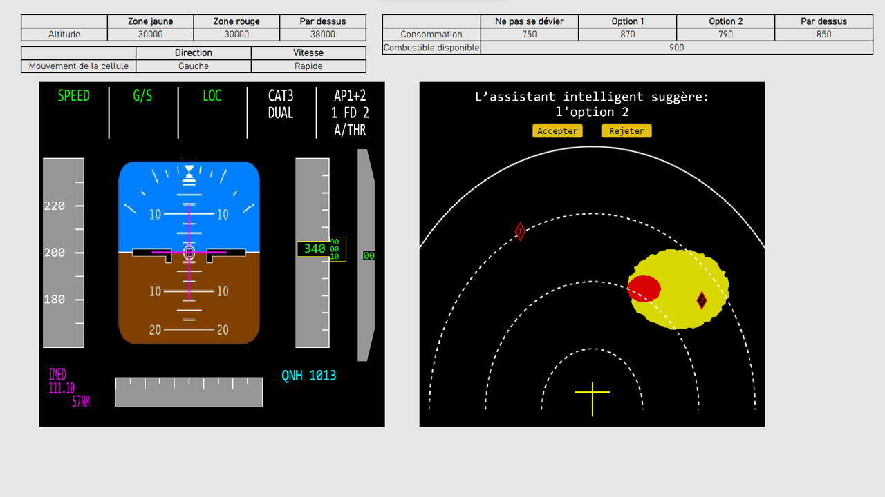

Un système d’aide à la décision a été entraîné avec les décisions que vous avez prises dans la session précédente.
Ce système est désormais capable de suggérer des décisions aux situations présentées.
Le système peut se tromper. Il ne fait que des suggestions, c’est à vous de les accepter ou les rejeter en fonction des données présentées.
Le système vous montrera la décision qu’il suggère s'il n'est pas d'accord avec la décision que vous avez pris, tel qu’illustré. 
Si vous jugez que la décision suggérée est préférable à celle que vous aviez choisi vous pouvez accepter la suggestion en cliquant sur Accepter.
Si vous jugez que votre décision est préférable à celle suggérée, vous pouvez rejeter la suggestion en cliquant sur Annuler.
Ensuite, le cas suivant sera présenté.